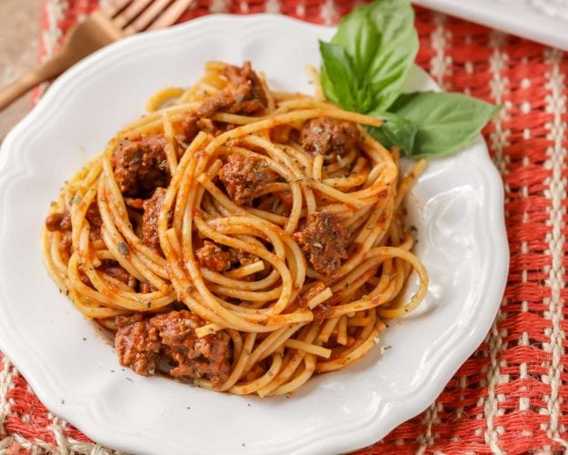

Spaghetti

Description
There's nothing like a hearty serving of homemade spaghetti. With a bit of prep work, this is a tasty meal that can last for days. Kid-friendly with a delicious homemade sauce. Perfect with garlic bread or a salad.
Ingredients
- 1 Pound Of Ground Beef
- 1 8oz Can Tomato Sauce
- 1 6oz Can Tomato Paste
- Salt and Pepper (to taste)
- 2 Cubes Beef Bouillon
- Fresh or Dried Herbs
- Spices (1/2 tsp dried basil, 1/2 tsp dried oregano, dash of garlic)
- 16oz Spaghetti Noodles
Steps
- GROUND BEEF. Brown the hamburger in a large pan. Drain the fat if desired.
- SAUCE. Throw in salt, pepper, tomato sauce and paste, water (with the bouillon cubes in it or beef broth in the can), sugar, basil, oregano, and garlic. Simmer on low for 40-60 minutes.
- NOODLES. A few minutes before the hour is up, cook the box of spaghetti noodles as directed on the package. Once the noodles are cooked, add them to the sauce and serve immediately.